一转眼在加州待的时间已经要比在伊利诺伊长了。湾区的四季虽然也有变化，但总感觉不那么明显，更多的是局部气候差异。时间久了就有些想念以前中西部四季分明的感觉，特别是秋天的红叶。今年因为疫情也没怎么出过远门，九月底的时候就琢磨着去哪里能赏秋。最后选了去Mammoth Lakes，距离不算太远，一个长周末可以搞定，而且以前也没去过Eastern Sierra，正好去转转。
行前准备
出发前主要参考了California Fall Color的预报以及Inyo和Mono county出的Bishop Fall Color Guide。一般来说Eastern Sierra的秋景在十月中旬会比较好，但是年份之间也会有差异，不太好过度依赖往年的数据。最好是在九月中旬开始关注预报，到红叶75%左右差不多就可以去了。而且海拔高度也会有影响，即使地理位置非常接近，高海拔山区的树会更早变色。我们这次选了10/8-10/10的那个周末去，因为前后的几周都没时间，结果没想到最后误打误撞碰上了一个特别的时机。
出发前的那个周三，队友看了眼天气预报发现周四Sierra山区会下雪。我们当时也没多想，带上轮胎防滑链开车小心点就好啦。结果周四晚上再查Google Map，发现怎么也没法调出早先查好的路线，原本预计4个多小时的车程变成了6个小时……查了公路信息后才知道，近一点的路线会经过的山口都关闭了，所以需要绕道先往北走88号公路经过Tahoe南边再转道395公路往南走，等于走了三角形的两条边。后来多查了些信息才知道，88号公路南边从西往东横穿Sierra的三条公路的山口在冬天因为积雪都会关闭，一直要到来年春夏才会重开。像Yosemite那边本来可以沿着120公路继续往东到Mono Lake，但是途经的Tioga Pass冬季会关闭，就必须要绕远路了。我在网上还看到了Caltran发的往年春末清除积雪的视频，真是挺壮观的。虽然要绕远路，但是这样顺便也可以经过Hope Valley，也算是路过秋景打卡胜地了。
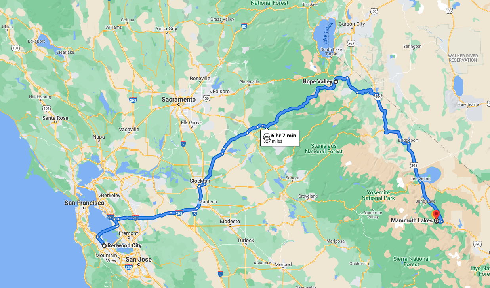
周五起了个大早，再次查了天气，还好没有继续下雪，不过120公路还是关闭的。正式出发前还去了一趟正畸牙医那里看牙，戴上了整牙前的分离器。之前还挺担心出去玩的时候不方便，不过后来证明还好，吃东西都没有太大的影响，就是稍微慢一点，表扬一下我坚强的牙。可能因为出门早，也没怎么堵车。到了Carson Pass的时候看到了路边的积雪，非常激动，毕竟是今年的初雪呀。Kirkwood附近山已经被雪覆盖了，配上前景的金黄色草甸，好像已经深秋了一样。
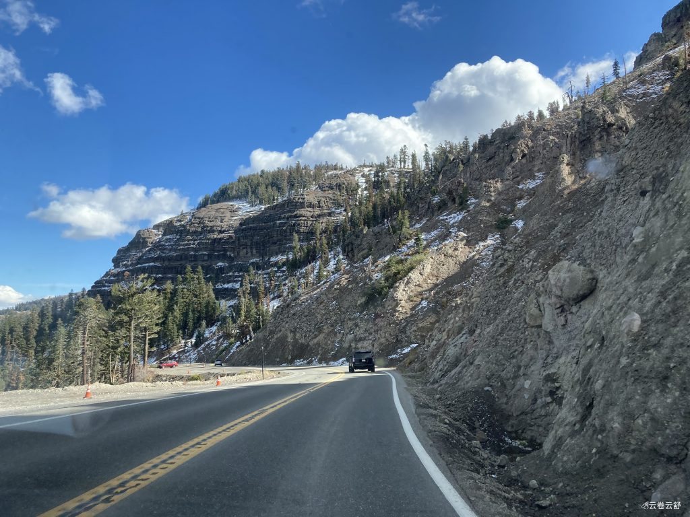
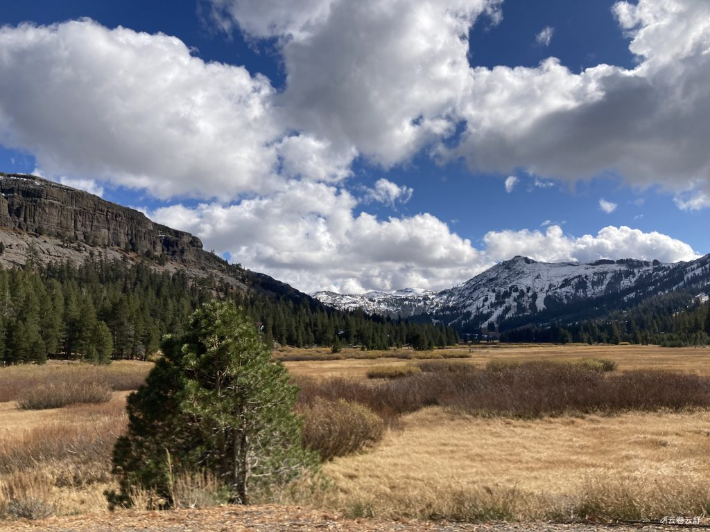
Kirkwood再往前开没多久就是Hope Valley，一段路上都是明亮的金黄色。想着还是要尽量赶在天黑前到目的地，我们没有多停留。
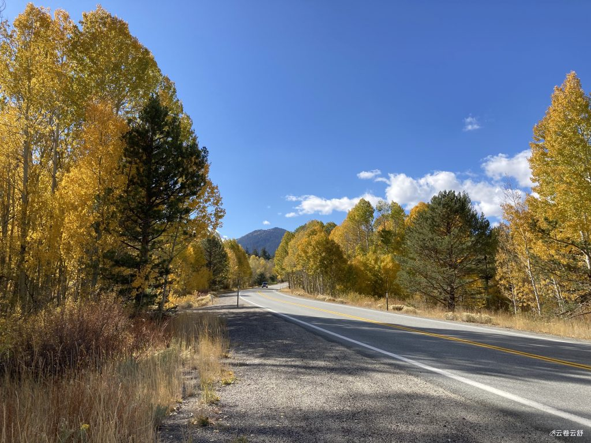
之后沿着395公路一路往南开，快到Mono City前看到了好几大座雪山，后来看了地图才知道它们就在Yosemite的背面（东面）。平时在加州看习惯了光秃秃的山，这次在公路边那么近看到雪山，有点一下子不知道自己是在哪里了。恍然间感觉特别像去年这个时候在Grand Teton看到的景色。这时候特别感激昨晚下的雪。本来只是出来看秋叶（而且因为这边没什么枫树也不会有红叶所以预期并不高），结果意外看到雪山，感觉非常赚到。
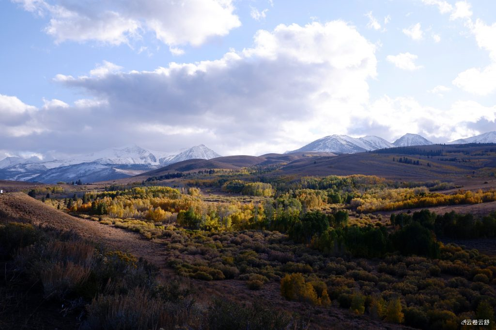
Mammoth有很大的滑雪场，但因为还没到雪季，又已经过了夏天，Airbnb都很便宜。在开去Airbnb的路上导航出了小小的问题。到了Mammoth一直把我们往后面的山上导，而且导航要我们走的路也已经关闭了，当时有一点慌，想说难道订的房子在深山里吗（当时订的时候也没看出来啊），如果因为封路到不了的话难道今晚也重新订住宿吗。后来再重新回到有信号的路上重新搜索，发现那一块区域能搜出3个Lake Mary Road……而我们住宿的地方其实早就已经开过了。开错路虚惊一场，但如果不是因为开错路，我们当天应该也不会想到去Twin Lakes。Twin Lakes是Mammoth附近几个湖离downtown最近的一个，背靠山。因为前一晚的降雪，湖边的树林都染上了一层星星点点的白色，像是被画师描过了一样。当时已经快接近日落了，眼前的景色每隔几分钟都不一样。脚下的雪踩上去发出咔嚓咔嚓的响声。空气是清冷的静谧。湖边还有几个小木屋，想来住在这边也是很不错，出门就能看到湖景。
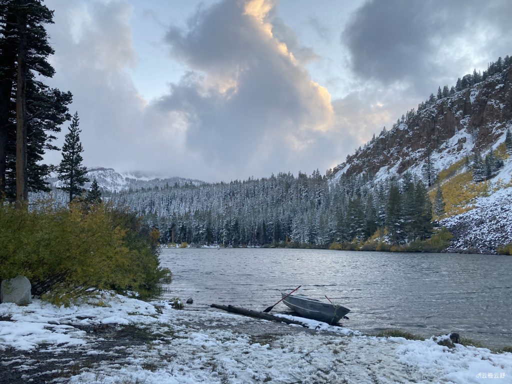
晚上在镇中心随便找一家不用排队的店，感觉值得推荐。店看上去平平无奇，菜做得很好吃。我点了牛排，队友点了鱼，都光盘了。当天晚上早早就睡了，毕竟长周末出来只有一天可以完整地玩耍，要尽量最大化地利用有日照的时间。
Bishop Creek Canyon
第二天一早起来，山里的清晨真是好冷啊。哆哆嗦嗦地出门，吸一口冰冷的空气，困意全消。Eastern Sierra这边可以看秋景的地方基本都分散在395公路沿途。之前做计划的时候想不好在June Lake和Bishop Creek Canyon之间选哪一个去。本着都没去过并且来都来了的精神，我们最后决定还是两边都去，一边半天。这样的好处是都不拉下，但是因为两个地点分别在Mammoth的南边和北边，来回赶其实有一部分时间会需要花费在走回头路上。现在回想起来如果重新选应该还是会这么决定，毕竟两边的风景挺不一样的。但是个人更偏好Bishop Creek Canyon多一点，山景比较偏壮丽，也更多野趣。下次去应该会多花一点时间在那边，可以多走一些长一点的徒步路线。（已经迫不及待想要计划明年春天去看野花了）
Bishop Creek Canyon那块区域主要有三个湖 North Lake, South Lake, 还有Sabrina Lake，都在168公路的沿线。我们选了North Lake， mac OS的high sierra壁纸就是在这里取景的。从168公路去到North Lake还需要开一段盘山公路，中间有一段路只能容纳一辆车通过，两车交汇的时候要特别小心，因为一边就是陡峭的悬崖。但是一路上的风景真的特别好。我们在回程的时候找了一个pullout停下来拍照。这边是一块峡谷的地形。西边面对的是Sierra的群山，山峰棱角分明。东边能远眺White Mountains，山的另一边就是内华达州了。东边的地貌感觉更接近沙漠。这种一转身看到的景色完全不同的感觉非常奇妙。
North Lake我们去的时候感觉叶子才刚开始变黄不久，路边都是满树满树的金黄深红，但是山脚下的还没完全变色。湖边还有前天下的积雪，靠近岸边的湖水已经开始结冰了。我们去的时候还看到有人在湖中心划船，应该是自己带去的canoe。
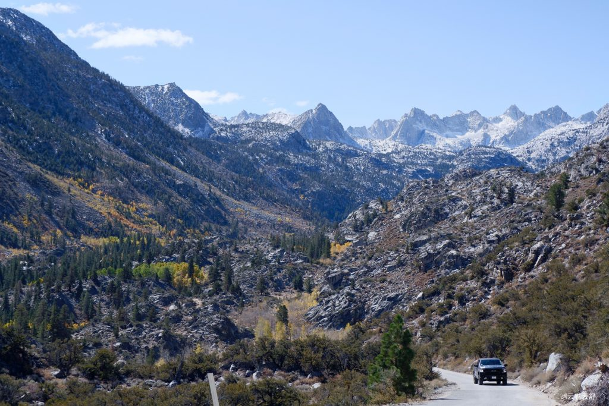
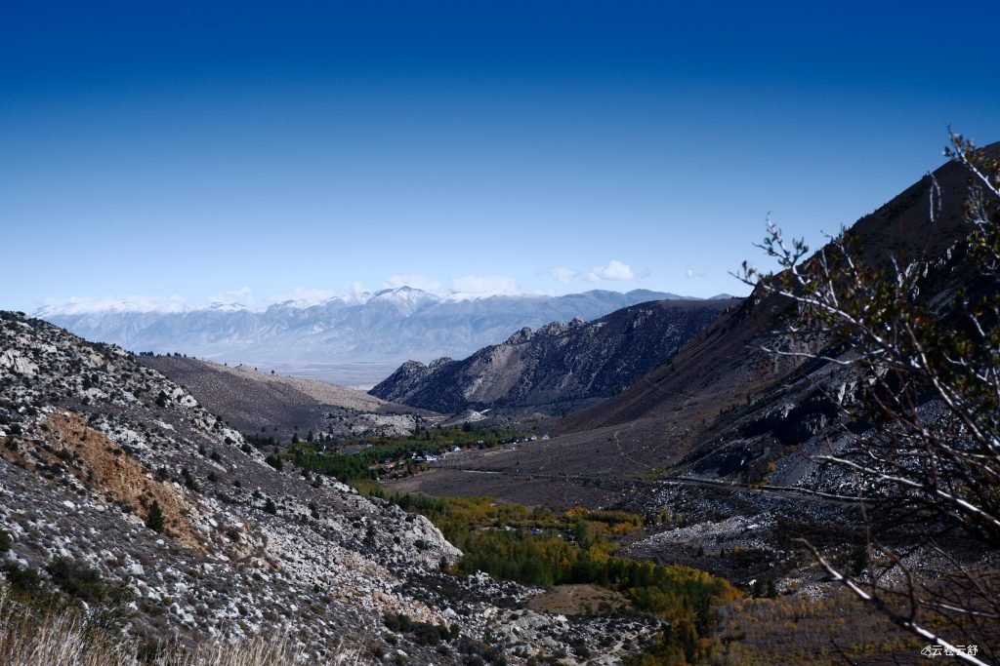
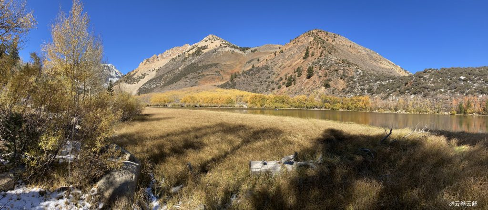
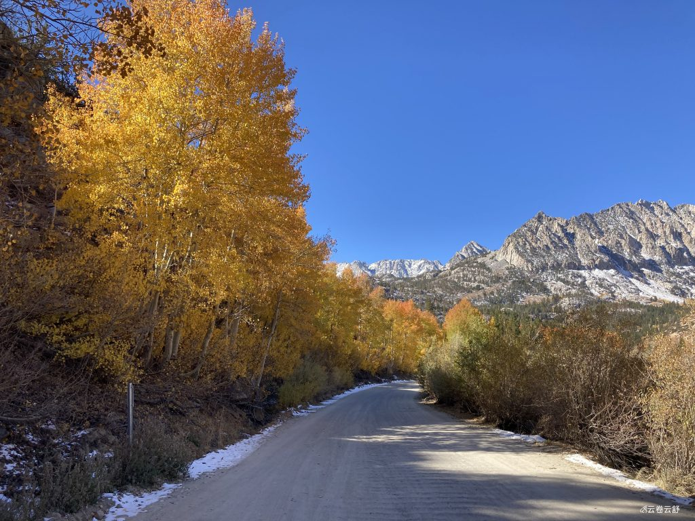
June Lake Loop
从Bishop回来后我们直接去了June Lake Loop，是一条从395公路叉出去的半月形支路。虽然叫June Lake，但其实一条路上会经过四个湖， June Lake, Gull Lake, Silver Lake, 还有Grant Lake。Grant Lake最大，但是因为今年加州干旱，Grant Lake海拔又最低，水量非常少，大片的湖底都暴露在日光下。当时看到了很多人一路开到裸露的湖底。Gull Lake有一个环湖的trail，走一圈大概1个小时左右， trail head在当地的图书馆附近。如果是从trail head开始走的话，前半段的风景比较好，因为有雪山做背景，不过基本没有遮阴。后半段会经过一些小树林，就不那么晒。湖边是可以租船的，有人划船也有人钓鱼，非常热闹。我们在湖边吃了早上打包的三明治当作午餐，非常惬意。
June Lake这边冬天是有滑雪场的，所以整体的环境度假氛围更浓一些，沿路也有不少餐馆。我们在走trail的时候看到旁边有好几座正在建造的小木屋，应该都是要做成度假屋的。
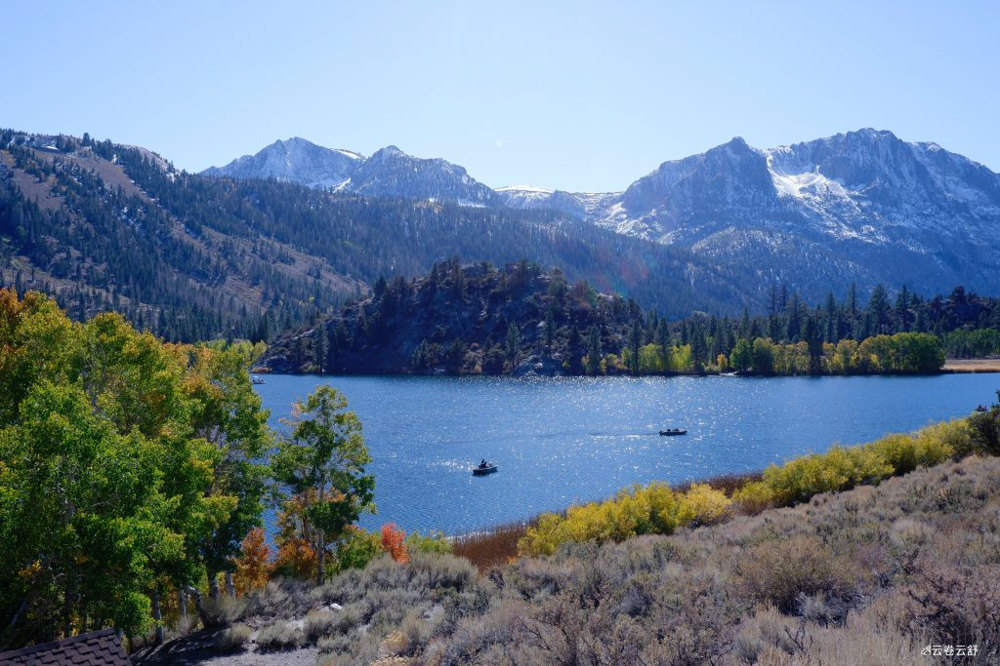
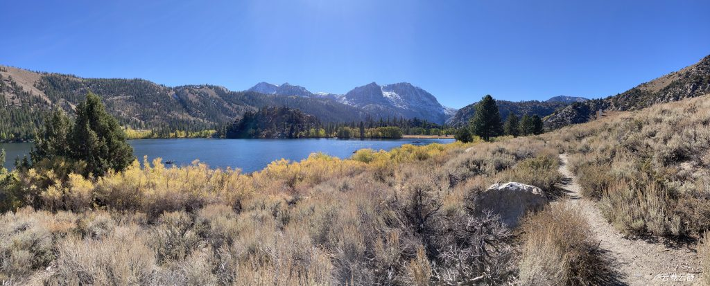
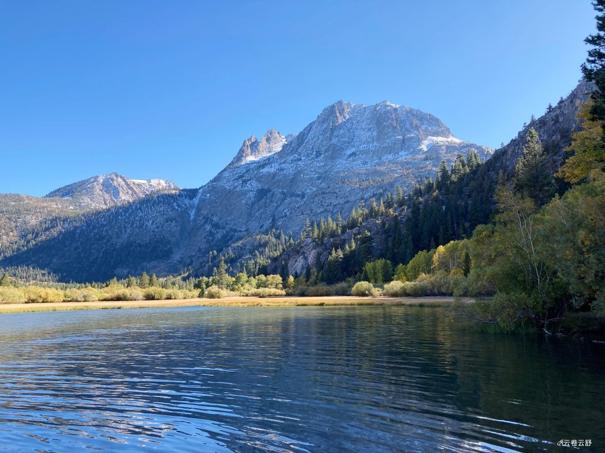
Mammoth 附近的湖们
从June Lake Loop回到Mammoth大概快下午五点了，离日落还有一个半小时（赞美夏令时）。原定要去的目的地都已经达成了，就临时开始找附近还有什么可以去的地方。地图上看了下第一天路过的Twin Lakes后面还有好几个湖，可以沿着公路继续往山上开。想着可以去转转，而且那边应该也是看日落不错的角度。后来没想到这一段段小小的行程成了最让我惊喜的部分。也可能是因为之前没有查这部分的攻略，所以脑海里没有具象的景象，所以看到后来的景色感受才会特别深吧。
Twin Lakes再往西有一个双子瀑布Twin Falls。应该是因为干旱加上秋天，水量不太大，但还是能明显看出是两条对称的瀑布。从Twin Lakes的方向可以远眺到瀑布。绕 Twin Lakes之后沿着 Lake Mary Road继续往山上开可以到瀑布的上游。是一个看日落很不错的地方。这一路上不徒步就可以看三个湖，Lake Mary, Lake Mimie, 还有Horseshoe Lake。高山湖在雪后，又加上日落时分的夕阳加持，景色动人又冻人。这一段路海拔都在2500米以上，所以开到后面特别是接近Horseshoe Lake地上的积雪都没化，还有少许的冰，开车要尽量小心。
Lake Mamie背靠的山峰形状很有特色。我们去的时候因为没什么风，湖面很平静，可以清晰地看到山峰的倒影。如果说Lake Mamie是有雪点缀，Horseshoe Lake就是白雪皑皑了。整个湖的周围都覆盖着积雪。我试着往湖边走了一段，每一脚踩下去积雪都有到小腿那么深。日落映照着远处山尖微微发红，给这近乎白描的画面添了一抹颜色。我们在雪地里站了好一会儿，等到太阳完全落下去了冷的不行才准备回车上。回去的路上还看到了一轮弯弯的新月。
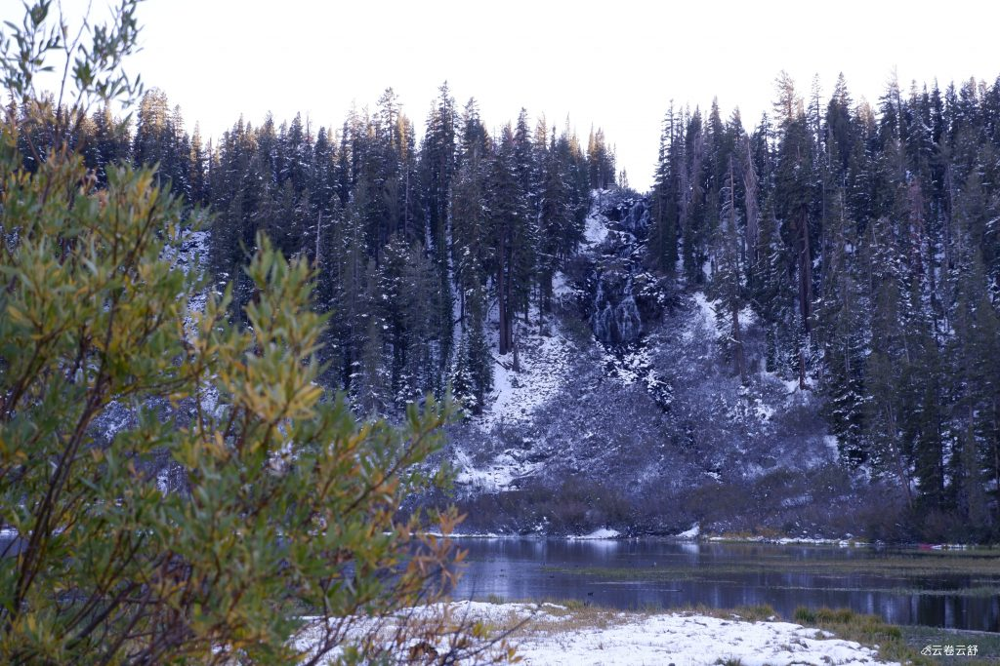
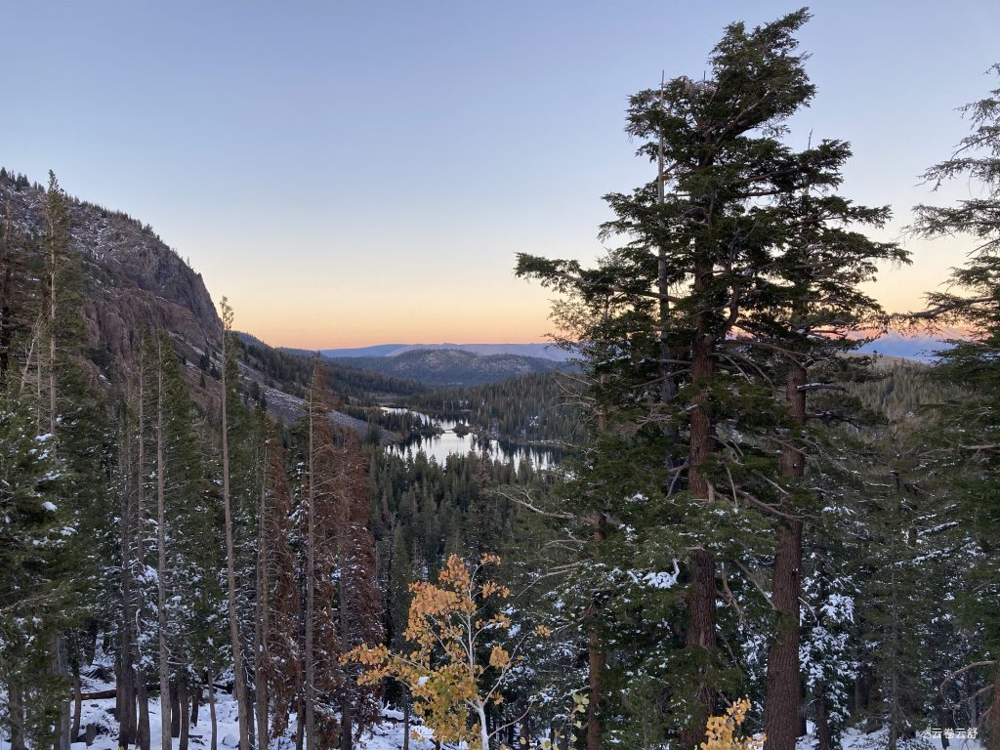
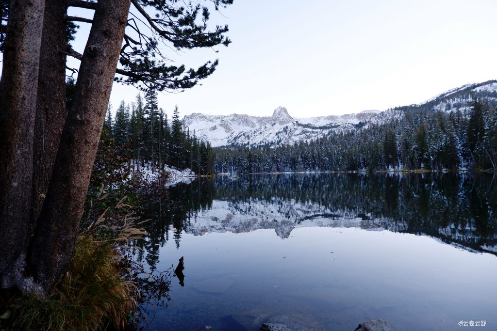
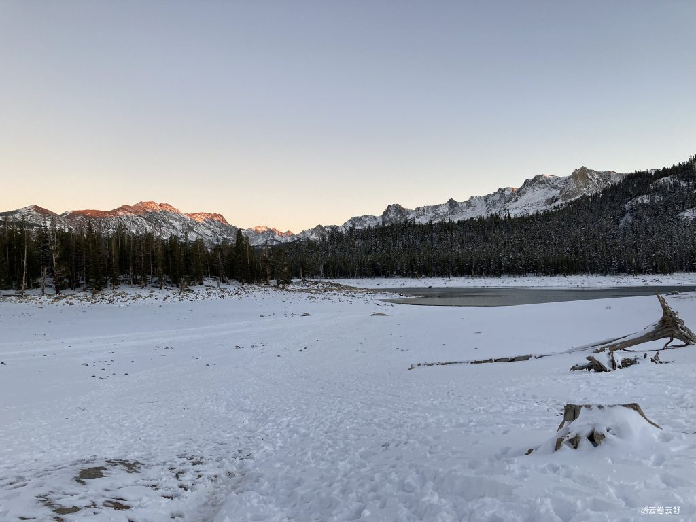
回程
周日要准备回程了。因为这场雪并不大，周日Tioga Pass已经重开了，我们也得以取道Yosemite回去。往返可以走不样的路非常开心。Yosemite今年这个时间完全没有水，几个瀑布全是干的。几个岩壁的景色还是非常漂亮。经过El Capitan的时候我们还看到了有人在攀岩。第一次实地看到在那么大的岩壁上攀登的人，非常震撼。
这一次出来本来是想看秋景的，如果是纯粹为了看叶子的话可能再晚一周来会更好。但是碰巧遇到的雪景已经让我非常满足了。一趟下来感觉也是穿越了好几个季节。之前听说Sierra是南高北低（美国本土最高的山峰Mt Whitney就在Sierra南部），东边陡峭西边平缓。这次来了之后感受到了东边的风景和我平时习惯了的Tahoe那边的景色确实挺不一样的。Mammoth的户外资源那么丰富，还是要多多探索呀。
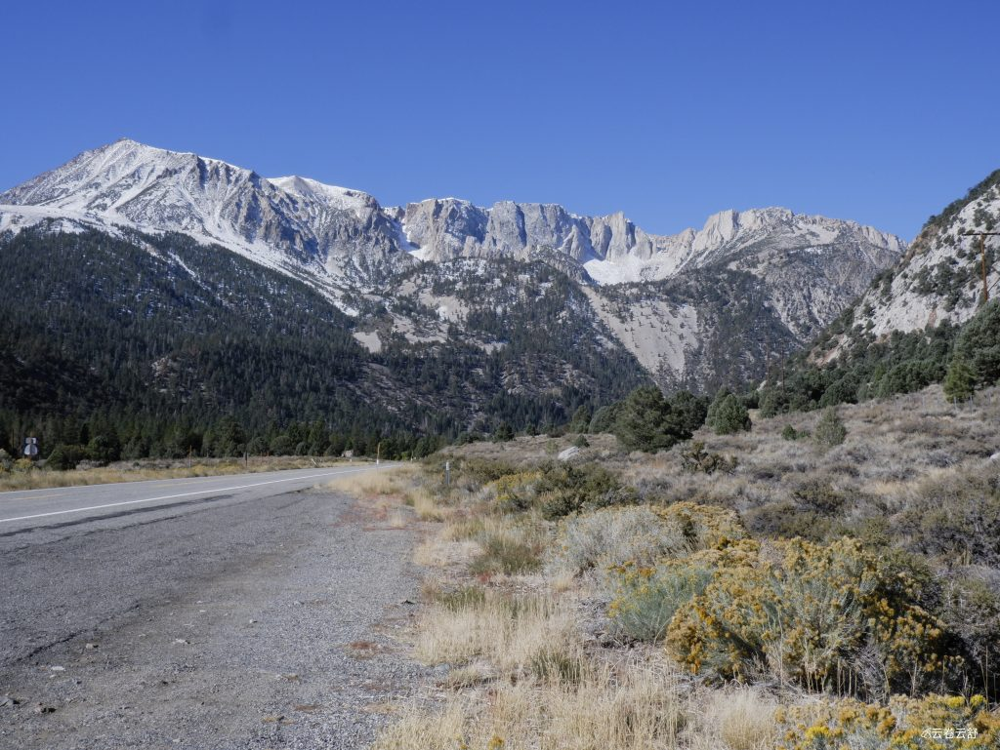
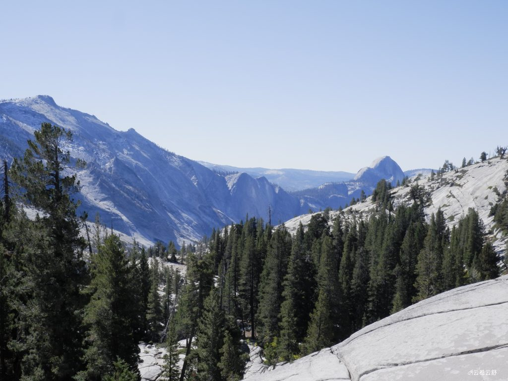